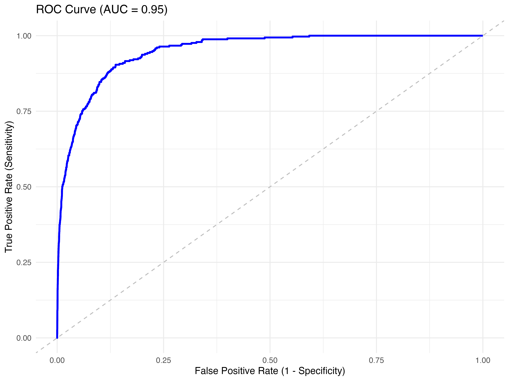

library(tidyverse)
library(ISLR)
library(broom)
library(pROC) # 用于 ROC 曲线和 AUC 计算
# install.packages("pROC") # 如果尚未安装
library(yardstick) # tidyverse 风格的模型评估包 (可选)
# install.packages("yardstick") # 如果尚未安装
# 加载 Default 数据集
data(Default)
Default <- ISLR::Default %>%
mutate(
default = factor(default, levels = c("No", "Yes")),
student = factor(student)
)
# 拟合 Logistic 回归模型
default_model <- glm(default ~ balance + student, data = Default, family = binomial)
# summary(default_model)
# 获取模型预测的概率 (预测为 "Yes" 的概率)
eval_data <-augment(default_model, type.predict = "response") %>%
mutate(predict_class = as.factor(ifelse(.fitted > 0.5, "Yes", "No")))
# glimpse(eval_data)第十二周：Logistic 回归评估 与 模型比较初步
1. 模型好坏：如何评估分类模型？
上周我们学习了如何拟合 Logistic 回归模型来预测分类结果的概率。本周我们将以 ISLR 包中的 Default 数据集为例，演示如何评估分类模型的预测性能 (Predictive Performance)，即模型在区分不同类别方面的表现如何。与线性回归使用 \(R^2\) 或 RMSE 不同，分类模型有其独特的评估指标。
本周目标
- 理解并能够计算混淆矩阵 (Confusion Matrix)。
- 掌握常用的分类模型评估指标：准确率 (Accuracy)、精确率 (Precision)、召回率 (Recall / Sensitivity)、F1 分数 (F1-Score)、特异度 (Specificity)，并理解它们之间的权衡。
- 理解 ROC 曲线 (Receiver Operating Characteristic Curve) 和 AUC 值 (Area Under the Curve) 的含义和作用。
- 能够使用 R 实现上述评估指标和 ROC/AUC 的计算与可视化。
- 了解使用 AIC/BIC 等信息准则比较广义线性模型 (GLM) 的思路。
- 继续推进综合实践项目：选题讨论与初步数据探索。
我们将以 ISLR 包中的 Default 数据集为例，拟合 default ~ balance + student 的 Logistic 回归模型。
2. 混淆矩阵 (Confusion Matrix)
混淆矩阵是评估分类模型性能的基础。它是一个表格，总结了模型预测类别与实际类别之间的匹配情况。对于二元分类，它通常是一个 2x2 的矩阵。
结构:
预测为 Positive (1) 预测为 Negative (0) 实际为 Positive (1) TP (True Positive) FN (False Negative) 实际为 Negative (0) FP (False Positive) TN (True Negative) - TP (真正例): 实际为 Positive，预测也为 Positive (预测正确)。
- FN (假反例): 实际为 Positive，但预测为 Negative (预测错误，漏报，Type II Error)。
- FP (假正例): 实际为 Negative，但预测为 Positive (预测错误，误报，Type I Error)。
- TN (真反例): 实际为 Negative，预测也为 Negative (预测正确)。
R 实现:
# 方法1: 使用基础 table() 函数 # 注意：第一个参数是实际值，第二个参数是预测值 confusion_matrix_base <- table(Predicted = eval_data$predict_class, Observed = eval_data$default) print(confusion_matrix_base)#> Observed #> Predicted No Yes #> No 9628 228 #> Yes 39 105# 方法2: 使用 yardstick 包 (更推荐，输出更规范) conf_mat_tbl <- eval_data %>% conf_mat(truth = default, estimate = predict_class) # truth=真实值, estimate=预测值 print(conf_mat_tbl)#> Truth #> Prediction No Yes #> No 9628 228 #> Yes 39 105
3. 基于混淆矩阵的评估指标
从混淆矩阵可以衍生出多个评估指标，从不同角度衡量模型性能。
- 准确率 (Accuracy):
定义: 模型预测正确的样本占总样本的比例。
公式: \(Accuracy = \frac{TP + TN}{TP + TN + FP + FN}\)
解读: 最直观的指标，但在类别不平衡 (Imbalanced Classes) 的数据集中具有误导性。例如，如果 99% 的样本是 Negative，一个将所有样本都预测为 Negative 的模型也能达到 99% 的准确率，但这显然不是一个好模型。
R 实现:
# 手动计算 accuracy_manual <- (9628 + 105) / (9628 + 105 + 228 + 39) print(accuracy_manual)#> [1] 0.9733# 使用 yardstick eval_data %>% accuracy(truth = default, estimate = predict_class)#> # A tibble: 1 × 3 #> .metric .estimator .estimate #> <chr> <chr> <dbl> #> 1 accuracy binary 0.973
- 精确率 (Precision): (也叫查准率)
定义: 在所有预测为 Positive 的样本中，实际也为 Positive 的比例。
公式: \(Precision = \frac{TP}{TP + FP}\)
解读: 衡量模型预测 Positive 的准确性。高精确率表示模型预测为 Positive 的结果中，很少有误报 (FP)。关注”预测出来的 Positive 有多准？“。
应用: 当误报 (FP) 的代价很高时很重要（例如，垃圾邮件检测，宁可漏掉一些垃圾邮件，也不想把正常邮件误判为垃圾邮件）。
R 实现:
# 手动计算 (预测为 Manual 的精确率) precision_manual <- 105 / (105 + 39) print(precision_manual)#> [1] 0.7291667# 使用 yardstick (需要指定 positive 类) eval_data %>% precision( truth = default, estimate = predict_class, event_level = "second" # "second" 表示第二个因子水平 "Yes" 是 positive 类 )#> # A tibble: 1 × 3 #> .metric .estimator .estimate #> <chr> <chr> <dbl> #> 1 precision binary 0.729
- 召回率 (Recall / Sensitivity / True Positive Rate, TPR): (也叫查全率、敏感度)
定义: 在所有实际为 Positive 的样本中，被模型成功预测为 Positive 的比例。
公式: \(Recall = Sensitivity = TPR = \frac{TP}{TP + FN}\)
解读: 衡量模型找出所有 Positive 样本的能力。高召回率表示模型很少漏报 (FN)。关注”所有 Positive 的样本，找出来了多少？“。
应用: 当漏报 (FN) 的代价很高时很重要（例如，疾病诊断，宁可误诊一些健康人，也不想漏掉真正的病人）。
R 实现:
# 手动计算 (Manual 类的召回率) recall_manual <- 105 / (105 + 228) print(recall_manual)#> [1] 0.3153153# 使用 yardstick eval_data %>% recall( truth = default, estimate = predict_class, event_level = "second" # "second" 表示第二个因子水平 "Yes" 是 positive 类 )#> # A tibble: 1 × 3 #> .metric .estimator .estimate #> <chr> <chr> <dbl> #> 1 recall binary 0.315# 或者使用 sensitivity() eval_data %>% sensitivity( truth = default, estimate = predict_class, event_level = "second" # "second" 表示第二个因子水平 "Yes" 是 positive 类 )#> # A tibble: 1 × 3 #> .metric .estimator .estimate #> <chr> <chr> <dbl> #> 1 sensitivity binary 0.315
- F1 分数 (F1-Score):
定义: 精确率 (Precision) 和召回率 (Recall) 的调和平均数 (Harmonic Mean)。
公式: \(F1 = 2 \times \frac{Precision \times Recall}{Precision + Recall} = \frac{2TP}{2TP + FP + FN}\)
解读: 综合考虑了精确率和召回率，当两者都较高时，F1 分数也较高。是评估模型综合性能的常用指标，尤其在类别不平衡时比准确率更可靠。
R 实现:
# 手动计算 f1_manual <- 2 * (precision_manual * recall_manual) / (precision_manual + recall_manual) print(f1_manual)#> [1] 0.4402516# 使用 yardstick eval_data %>% f_meas( truth = default, estimate = predict_class, event_level = "second" # "second" 表示第二个因子水平 "Yes" 是 positive 类 ) # f_meas 计算 F-beta score, 默认 beta=1 即 F1#> # A tibble: 1 × 3 #> .metric .estimator .estimate #> <chr> <chr> <dbl> #> 1 f_meas binary 0.440
- 特异度 (Specificity / True Negative Rate, TNR):
定义: 在所有实际为 Negative 的样本中，被模型成功预测为 Negative 的比例。
公式: \(Specificity = TNR = \frac{TN}{TN + FP}\)
解读: 衡量模型正确识别 Negative 样本的能力。与召回率 (Sensitivity) 对应。
应用: 在疾病诊断中，表示正确识别健康人的能力。
R 实现:
# 手动计算 specificity_manual <- 9628 / (9628 + 39) print(specificity_manual)#> [1] 0.9959657# 使用 yardstick eval_data %>% specificity( truth = default, estimate = predict_class, event_level = "second" # "second" 表示第二个因子水平 "Yes" 是 positive 类 )#> # A tibble: 1 × 3 #> .metric .estimator .estimate #> <chr> <chr> <dbl> #> 1 specificity binary 0.996
指标权衡 (Trade-off)
- 精确率 vs 召回率: 通常存在权衡。提高精确率（减少 FP）可能会降低召回率（增加 FN），反之亦然。选择哪个更重要取决于具体应用场景和两类错误的代价。
- 阈值选择: 改变分类阈值（默认 0.5）会影响预测类别，从而改变混淆矩阵和所有这些指标。ROC 曲线可以帮助我们理解不同阈值下的性能。
4. ROC 曲线 与 AUC 值
ROC 曲线 (Receiver Operating Characteristic Curve):
- 一种可视化分类模型在所有可能阈值下性能表现的图形。
- 横轴: 假正例率 (False Positive Rate, FPR) = \(1 - Specificity = \frac{FP}{FP + TN}\)。
- 纵轴: 真正例率 (True Positive Rate, TPR) = \(Recall = Sensitivity = \frac{TP}{TP + FN}\)。
- 绘制方法: 连续改变分类阈值，计算每个阈值下的 TPR 和 FPR，描点连接。
- 解读: 曲线越靠近左上角 (TPR 高，FPR 低)，模型性能越好。对角线代表随机猜测。
AUC 值 (Area Under the ROC Curve):
- ROC 曲线下的面积，取值 0 到 1。
- 解读: AUC 越大，模型区分 Positive 和 Negative 样本的整体能力越强。不依赖特定阈值。AUC=0.5 表示随机猜测。
- 直观含义: 从 Positive 和 Negative 样本中各随机抽取一个，AUC 值等于模型将 Positive 样本预测概率排在 Negative 样本预测概率之前的概率。
R 实现 (使用
yardstick包):# 计算 AUC 值 auc_value <- eval_data %>% yardstick::roc_auc( truth = default, .fitted, # 预测为 "Yes" 的概率列 event_level = "second" ) print(auc_value)#> # A tibble: 1 × 3 #> .metric .estimator .estimate #> <chr> <chr> <dbl> #> 1 roc_auc binary 0.950# 计算 ROC 曲线数据 roc_curve_data <- eval_data %>% yardstick::roc_curve( truth = default, .fitted, # 预测为 "Yes" 的概率列 event_level = "second" ) # 绘制 ROC 曲线 ggplot(roc_curve_data, aes(x = 1 - specificity, y = sensitivity)) + geom_line(color = "blue", size = 1) + geom_abline(slope = 1, intercept = 0, linetype = "dashed", color = "grey") + labs( title = paste0("ROC Curve (AUC = ", round(auc_value$.estimate, 3), ")"), x = "False Positive Rate (1 - Specificity)", y = "True Positive Rate (Sensitivity)" ) + theme_minimal()
# 找到最佳阈值（例如，Youden's J 最大化） best_threshold <- roc_curve_data %>% mutate(youden_j = sensitivity + specificity - 1) %>% filter(youden_j == max(youden_j)) %>% select(.threshold, sensitivity, specificity, youden_j) print(best_threshold)#> # A tibble: 1 × 4 #> .threshold sensitivity specificity youden_j #> <dbl> <dbl> <dbl> <dbl> #> 1 0.0317 0.904 0.863 0.767
什么是 Youden’s J 最大化？
Youden’s J 指数（又称 Youden’s J statistic）是评估二分类模型性能的一个指标，定义为：
\[ J = \text{Sensitivity} + \text{Specificity} - 1 \]
其中，Sensitivity（灵敏度/召回率）和 Specificity（特异度）分别衡量模型对正例和负例的识别能力。J 值越大，模型在该阈值下的整体区分能力越强。
Youden’s J 最大化方法有明确的理论依据。Youden’s J 指数最早由 W.J. Youden 在 1950 年的论文 “Index for rating diagnostic tests”（Biometrics, 1950, 6(3): 195-198）中提出。该指数衡量了诊断测试在不同阈值下对正例（灵敏度）和负例（特异度）识别能力的综合表现。最大化 J 值等价于在灵敏度和特异度之间取得最优平衡点，从而使模型整体区分能力最强。因此，选择使 J 值最大的阈值，理论上可以获得最佳的分类效果，尤其适用于正负样本重要性相当的场景。参考文献：Youden, W. J. (1950). Index for rating diagnostic tests. Biometrics, 6(3), 195-198.
在 ROC 曲线分析中，常用 Youden’s J 最大化来确定最佳分类阈值，从而提升模型的实际应用效果。
5. 模型比较初步：AIC 与 BIC
当我们有多个候选的 Logistic 回归模型时，如何比较它们？
信息准则 (Information Criteria): AIC 和 BIC 同样适用于广义线性模型 (GLM)。
- 权衡模型的拟合优度和模型复杂度。
- 目标: 选择 AIC 或 BIC 最小的模型。
- 只能用于比较使用相同因变量和相同数据集拟合的模型。
R 实现:
# 假设我们有另一个模型，只用 student 预测 default default_model_student_only <- glm(default ~ student, data = Default, family = binomial) # 比较两个模型的 AIC 和 BIC AIC(default_model, default_model_student_only)#> df AIC #> default_model 3 1577.682 #> default_model_student_only 2 2912.683BIC(default_model, default_model_student_only)#> df BIC #> default_model 3 1599.313 #> default_model_student_only 2 2927.104# 结果显示 default_model (包含 student 和 balance) 的 AIC 和 BIC 都更小， # 表明在拟合优度和复杂度之间权衡后，它是相对更优的模型。其他比较方法:
- 似然比检验 (LRT): 比较嵌套模型。
anova(model1, model2, test="LRT")。 - 交叉验证 (Cross-Validation): (更高级) 在测试集上评估模型性能，更可靠。
- 似然比检验 (LRT): 比较嵌套模型。
6. 综合实践项目进展
- 本周任务:
- 确定选题和研究问题: 与老师或助教讨论你的初步想法，确保可行性。
- 获取并初步检查数据: 使用
readr导入数据，使用glimpse(),summary(),skimr::skim()等函数了解数据结构、变量类型、缺失值等。 - 进行初步的 EDA: 使用
ggplot2绘制关键变量的分布图（直方图、箱线图、条形图）和变量关系图（散点图、分组箱线图）。
7. 本周总结与预告
本周我们重点学习了如何评估分类模型（特别是 Logistic 回归）的性能。我们掌握了混淆矩阵及其衍生指标（准确率、精确率、召回率、F1、特异度），理解了它们的应用场景和权衡。我们还学习了 ROC 曲线和 AUC 值作为不依赖阈值的整体性能评估工具。最后，我们了解了使用 AIC/BIC 比较 GLM 的思路。
下周预告: 我们将进一步探讨 AI 工具在数据分析中的应用，学习如何更有效地利用 AI 进行编程、调试、解释和报告写作，并强调批判性思维和验证的重要性。同时，我们将学习可重复报告的基础知识（R Markdown / Quarto），让我们的分析过程和结果更规范、更易于分享。